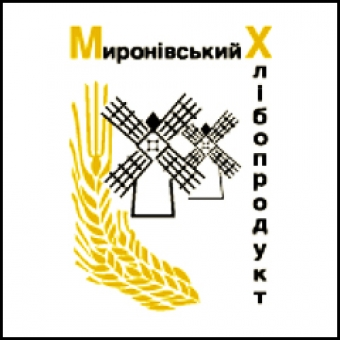
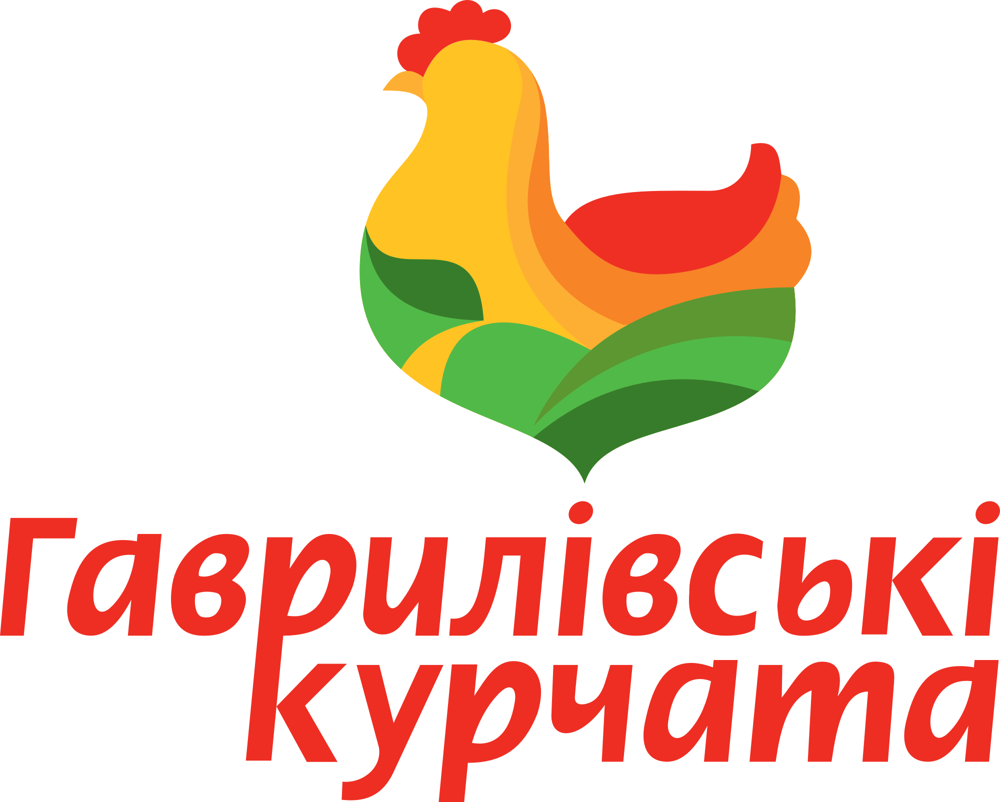
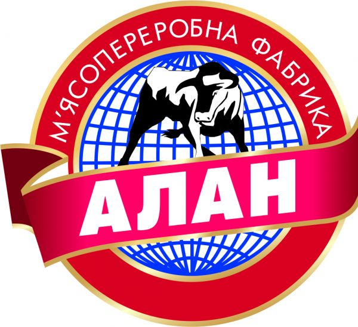
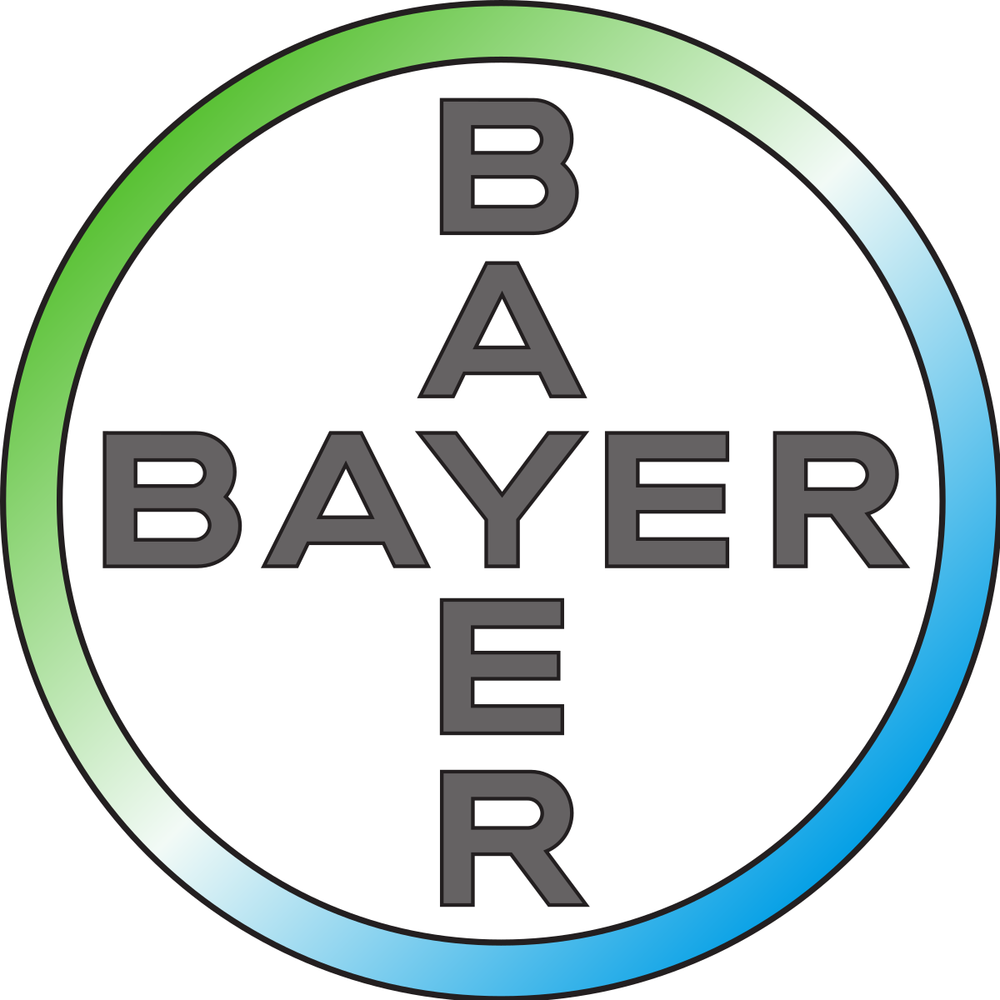
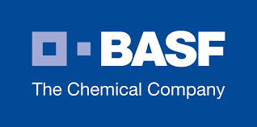

ITS Water производитель моющих и дезинфеципующих препаратов для пищевой промышленности

- История создания
- Наша команда
- Наша деятельность
- Контакты
Последние новости
- 13.08.2017 запущена автоматическая линия розлива
- 04.07.2017 налажен експорт проукции в Республику Молдова
- 27.06.2017 произведено более 230 тон продукцииза первое полугодие
- 23.04.2017 получен ертификат ISO 2000:201
- 04.03.2017 Разработан уникальный препаратдля мойки термокамер на основе трех-компонентного ПАВ
- 14.02.2017 увеличина концентрация CH3CO3H за счет методики добавления H2O2
Пологовский химический завод «Коагулянт» – инновационное предприятие химической отрасли Украины, которое специализируется на разработке и промышленной адаптации современных технологий в области водоподготовки, очистки сточных вод, сгущения и обезвоживания шламов с использованием реагентов собственного производства.
Кроме этого, предприятие осуществляет полный цикл производства химических реагентов специального назначения, которые используются в процессах обработки промышленных оборотных вод открытых и замкнутых систем водоснабжения, мойки и дезинфекции оборудования пищевых производств и др.
Наши партнеры


Вход
Регистрация
Наши спонсоры
 